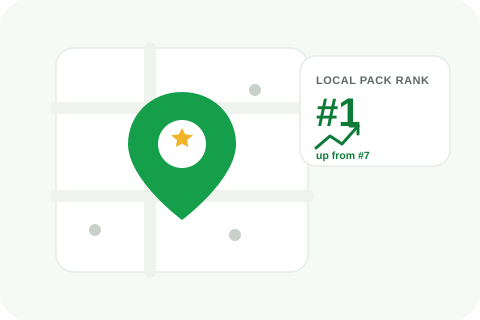

A one-line "Great service!" review doesn't feel like it needs a reply the way a detailed complaint does. Whether it's worth responding anyway depends on what you're actually optimizing for, and the answer isn't the same for every business.

Google has indicated that review responses are one of many signals considered in local ranking, and a profile with consistent owner engagement, across both positive and negative reviews, reads as more actively managed than one that only responds when something goes wrong. For businesses still building review volume, responding to every review, including short positive ones, is a low-cost way to show that activity.
Once review volume gets high enough, responding to every single "Great service, thanks!" starts producing near-identical replies that add little value to anyone reading them, and the time spent writing dozens of generic acknowledgments could go toward responding more thoroughly to reviews that actually need it, a detailed complaint, a mixed review, anything with specifics worth engaging with.
If you do respond to short positive reviews, avoid pasting the identical sentence under every one, "Thank you for your review!" repeated fifty times reads as a bot to anyone scrolling through your review section, which is the opposite of the active-engagement signal you're going for. A short but specific reply, even just referencing the service mentioned, takes barely more effort and looks genuinely different from a canned response.
Responding and reporting are two separate actions serving different purposes, responding is public engagement, reporting is a request for platform action. For positive reviews this distinction barely matters since there's nothing to report, but it's worth understanding the difference generally, covered in reporting vs. disputing a review.
Most businesses do best somewhere between "respond to literally everything" and "only respond to problems": a consistent habit of replying to recent reviews, weighted toward the ones with actual content to engage with, kept up regularly enough that the profile reads as actively managed without turning into a copy-paste exercise.
A single-location business getting a handful of reviews a month can realistically respond to every single one without it becoming a time sink, and at that volume, the completeness itself is part of the signal. A business pulling in dozens of reviews weekly across multiple locations faces a different math problem, responding to all of them with genuine, non-templated replies stops being practical, and that's exactly when prioritizing by content over blanket coverage starts to matter more than hitting 100%.
If you're deciding whether a short positive review is worth a reply, ask whether it names anything specific, a staff member, a particular service, a detail about the visit. If it does, that's worth a quick acknowledgment regardless of length, since it's the kind of review a future customer actually reads closely. If it's truly generic with nothing to reference, that's the one safe to leave unanswered when volume is high, rather than forcing a reply that adds nothing beyond "we were here too."
We handle response management and local SEO together, so engagement supports your rankings rather than sitting separate from them.